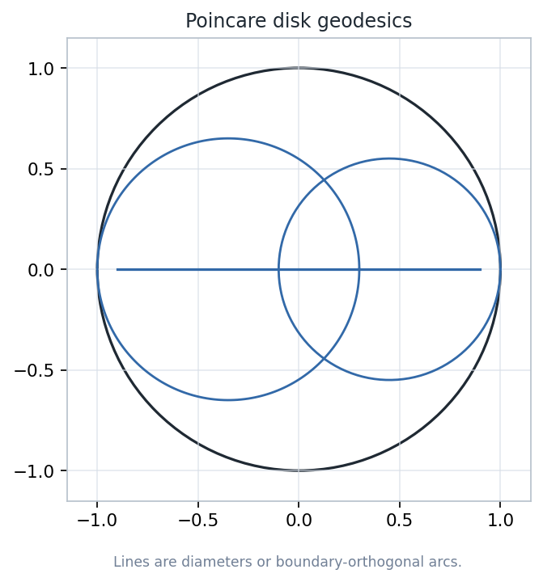
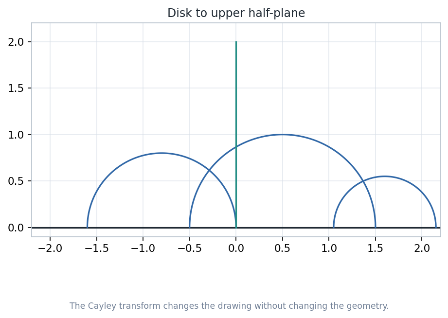
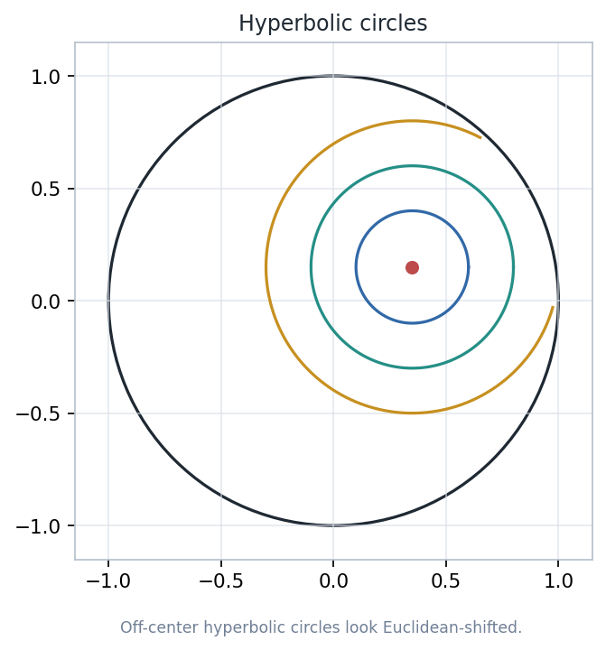
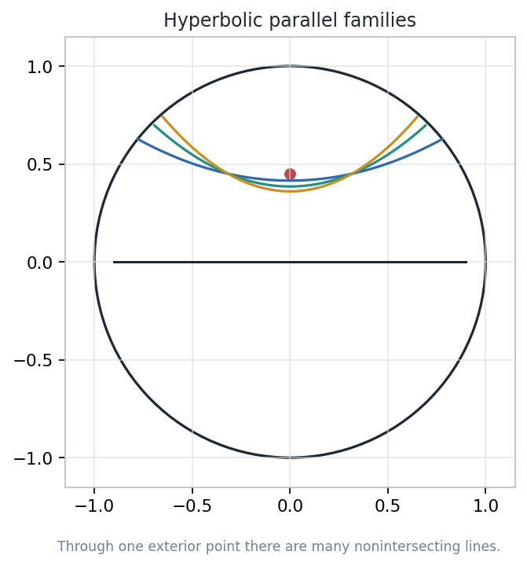
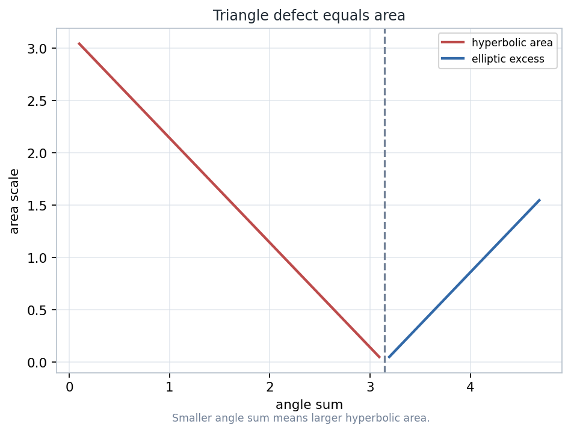

The Poincare disk and upper half-plane turn non-Euclidean geometry into a precise laboratory: geodesics, distance, circles, parallelism, and triangle area are all controlled by a metric that grows toward infinity.
Notebook: Geometry-with-an-Introduction-to-Cosmic-Topology/chapter-05-hyperbolic-geometry/05-hyperbolic-geometry.ipynb
A geometry is a space together with a transformation group. In this chapter, the useful facts are the invariants under hyperbolic motions.
Boundary points are ideal, geodesics are computable clines, and formulas become sanity checks against generated visuals.
Equal Euclidean strokes represent very different hyperbolic lengths.
The Poincare disk is \(D=\{z: |z|<1\}\) equipped with the metric \(ds=2|dz|/(1-|z|^2)\).
The unit circle is not part of the space. It records directions to infinity and ideal endpoints for geodesics.

Notebook-derived diagram: diameters and orthogonal arcs are hyperbolic lines.
A hyperbolic line in the disk is a Euclidean diameter or a circular arc whose supporting circle is orthogonal to \( |z|=1 \).
At each ideal endpoint, the tangent of the drawn arc should be perpendicular to the tangent of the boundary circle.
\(T_a(z)=e^{i\theta}\dfrac{z-a}{1-\overline{a}z}\), with \( |a|<1 \)
These maps preserve the disk, send geodesics to geodesics, preserve angles, and preserve hyperbolic distance.

The Cayley transform carries disk geodesics to half-plane geodesics.
\( C(z)=i\,\dfrac{1+z}{1-z} \)
Distance can be read from the ideal endpoints of the geodesic through \(p\) and \(q\). Mobius maps preserve the relevant cross-ratio.
Map the geodesic to a diameter or vertical ray, compute the simple formula there, and map the result back.

Notebook-derived diagram: hyperbolic circles are metrically round even when Euclidean coordinates compress them.
The same hyperbolic radius can occupy different Euclidean footprints depending on where the center sits in the disk.
Near the boundary, the metric density makes small Euclidean displacements expensive in hyperbolic distance.

Classify by ideal endpoints: intersecting, limiting parallel, or ultraparallel.
Two geodesics cross inside the disk. Their intersection has a genuine hyperbolic angle.
They share one ideal endpoint and approach each other only at infinity.
They share no ideal endpoint and admit a common perpendicular geodesic.
The disk and half-plane preserve angles at intersections. This makes triangle angle sums visually meaningful.
Euclidean segment length is not hyperbolic length. Area also needs the hyperbolic density, not ordinary coordinate area.

Notebook-derived diagram: area increases as the angle sum drops below \( \pi \).
Area(\(\triangle\)) = \(\pi - (A+B+C)\)
Move a vertex toward the ideal boundary. The Euclidean picture stretches, the angles shrink, and the predicted area grows.
Choose three disk points, compute geodesic sides, estimate the angles, and compare numerical area with triangle defect.
The notebook writes an interactive lab at artifacts/chapter-05/html/parameter-lab.html.
Treating \( |z|=1 \) as reachable points inside the space.
Measuring arc length with the Euclidean ruler shown on the page.
Calling a circular arc geodesic without checking orthogonality to the boundary.
Before computing, ask which model is being used, which transformations preserve the geometry, and which visible quantities are actual hyperbolic invariants.
The core concepts are not isolated formulas. They are a working system of models, transformations, ideal boundary behavior, and curvature.
Elliptic geometry will contrast this story by removing ideal boundary behavior and using spherical/projective measurement.
Later surface geometry and cosmic topology use these local geometries as building blocks for global spaces.